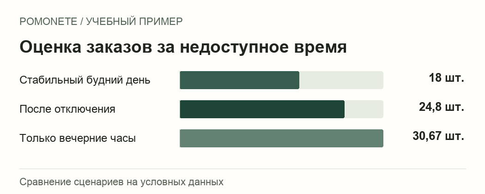

Сколько заказов Яндекс Маркет мог недополучить за часы без товара
Аналитика селлера по доступным часам с поправкой на время и распределение спроса.
Когда термос перестал показываться на Яндекс Маркете, суточные заказы опустились почти до нуля. После возврата предложения недельный график продолжил выглядеть плохо. В такой ситуации полезно оценить недополученный объём по доступным часам, а затем посмотреть, является ли оценка достаточно надёжной для планирования заказа поставщику.
Как собрать сравнимые часы
Возьмите журнал доступности по предложению и дату создания заказа. Соберите часы одинакового типа и временной зоны. Разделяйте длинное отключение и короткий эпизод, после которого заказ мог состояться позднее. В числитель берутся заказы, оформленные в выбранных часах. В следующем разделе пересчитываем интенсивность на период наблюдения.
Чтобы пересобрать расчёт «Оценка заказов за недоступное время» для своего магазина, перенесите в него исходные числа. В формуле A обозначает «заказы в сравнимые часы», B обозначает «часы доступности», C обозначает «часы без товара». Сначала оценивается интенсивность на единицу базы, затем она применяется к новому объёму. Допущение о постоянной интенсивности требует проверки. Запишите рядом период и охват каждого среза. Для оценочных строк оставьте пояснения рядом с исходными значениями. При чтении сводки будет видно, какие из них пока подтверждены.
Оценка заказов за недоступное время = A ÷ B × C
| Условие | Заказы в сравнимые часы | Часы доступности | Часы без товара | Оценка заказов за недоступное время |
|---|---|---|---|---|
| Стабильный будний день | 84 | 56 | 12 | 18 шт. |
| После отключения | 62 | 40 | 16 | 24,8 шт. |
| Только вечерние часы | 46 | 24 | 16 | 30,67 шт. |

В сценарии «Стабильный будний день» в формулу подставляем заказы в сравнимые часы = 84, часы доступности = 56, часы без товара = 12. Получается 18 шт.. Для ПН–ЧТ выделили часы, в которые предложение было видно с обычной ценой и обещанным сроком доставки.
В сценарии «После отключения» в формулу подставляем заказы в сравнимые часы = 62, часы доступности = 40, часы без товара = 16. Получается 24,8 шт.. Артикул заново появился к вечеру. Из базы убрали начало дня с несовпадающей ценой.
В сценарии «Только вечерние часы» в формулу подставляем заказы в сравнимые часы = 46, часы доступности = 24, часы без товара = 16. Получается 30,67 шт.. Дневные часы заменили историей за те же часы суток в аналогичные дни недели.
Если «Стабильный будний день» взять за исходную точку, «После отключения» меняет показатель «оценка заказов за недоступное время» на 6,8 шт., а «Только вечерние часы» на 12,67 шт.. Между двумя последними строками разница составляет 5,87 шт. при вычитании второй из третьей. Смотрите, какой именно вход изменился между строками. Если менялись объём и условия одновременно, итог сравнения относится ко всему сочетанию.
От меньшего результата до большего в таблице 12,67 шт.. При переходе из «После отключения» со значением 24,8 шт. в «Только вечерние часы» со значением 30,67 шт. условия заданы явно. Этот интервал описывает три построенных случая, а для вероятности исходов нужна история. В рабочей записке полезно назвать минимальное значение, при котором сохранится ваше решение. Если такой порог попадает внутрь интервала, подтвердите спорный параметр до того, как менять процесс.
Чем простой отличается от низкого спроса
Товара могло не быть лишь в одном регионе, а предложения оставались доступны в другом. Используйте региональный срез, если он доступен. Если его нет, учитывайте границы доступного измерения в подписи к числу. Заказы конкурентов или отложенные покупки не видны в таблице продавца и не подставляются как состоявшиеся.
В расчёт «После отключения» входят заказы в сравнимые часы, часы доступности, часы без товара. Для каждого впишите, где взять факт и с каким временным лагом он поступит. Опорой будут отчёт аналитики и история доступности предложения. Если один источник обновляется быстрее другого, зафиксируйте общий момент доступности. При существенном разрыве покажите последние данные отдельным оперативным значением.
Рядом с таблицей показов положите календарь доступности, позиций и цен. Выгрузка агрегатов удобна для первого сигнала, но день с выключенным предложением ломает сравнение. Для каждой крупной группы полезно иметь отдельные суммы числителя и знаменателя. Если у дорогой категории мало показов, сводная конверсия почти полностью повторит поведение ходовых позиций. Для разбора причины начните именно с групп, у которых заметно изменился вклад в суммарную аудиторию.
Что сильнее всего меняет результат
От результата 24,8 шт. в строке «После отключения» пересчитайте несколько вариантов. Проверьте «заказы в сравнимые часы», «часы доступности», «часы без товара». Прибавка около десятой доли на вход показывает реакцию за один шаг. Целые числа сохраняем целыми. Для долей, где прирост выводит числитель за предел базы, пробуем уменьшение. Все остальные параметры при каждой подстановке сохраняются.
- «Заказы в сравнимые часы» меняется с 62 на 68. При прежних остальных входах получается 27,2 шт., сдвиг составляет 2,4 шт..
- «Часы доступности» меняется с 40 на 44. При прежних остальных входах получается 22,55 шт., сдвиг составляет -2,25 шт..
- «Часы без товара» меняется с 16 на 18. При прежних остальных входах получается 27,9 шт., сдвиг составляет 3,1 шт..
Больше всего изменила итог подстановка «часы без товара». Отклонение составило 3,1 шт.. До сбора новых данных оцените, насколько правдоподобен такой шаг. Например, расход может подтверждаться документом, а объём пока наблюдается лишь частично. Уточняйте прежде всего те входы, где одновременно возможен заметный сдвиг и мало подтверждений.
Если отключение пришлось на время платного продвижения, используйте отдельно интенсивность обычных часов и интенсивность прошлых промочасов. При отсутствии истории аналогичного продвижения запишите цель акции отдельно, чтобы не выдать плановый объём за фактический спрос.
Как выбрать размер пополнения
Проверьте, при какой оценке недополученного спроса меняется решение по поставке. Для резервной закупки полезнее диапазон, а для объяснения вчерашнего графика достаточно одной средней величины. В течение недели продлите наблюдение по сравнимым часам и проверьте, есть ли отложенный всплеск после восстановления предложения.
Снимайте второй срез на тех же условиях. Если изменились источники или доли предложений, добавьте таблицу с фиксированным составом товаров и отметьте, какую долю исходной выборки она охватывает. Один расчёт покажет, что произошло у магазина в целом. Расчёт с фиксированным составом покажет изменение у сравнимых позиций. Заказы закрываются со временем, поэтому суммы по завершённым продажам дополните датой проверки.
Для управленческой встречи подготовьте два небольших примера из рабочих записей. Первый сверяет «оценка заказов за недоступное время» при базовых условиях «Стабильный будний день». Второй берёт изменившуюся строку и объясняет, какой источник исправлен. Селлеру Яндекс Маркета будет проще повторить расчёт на новой группе, если видны исходные значения, дата анализа и момент, когда итог станет достаточно точным для решения.